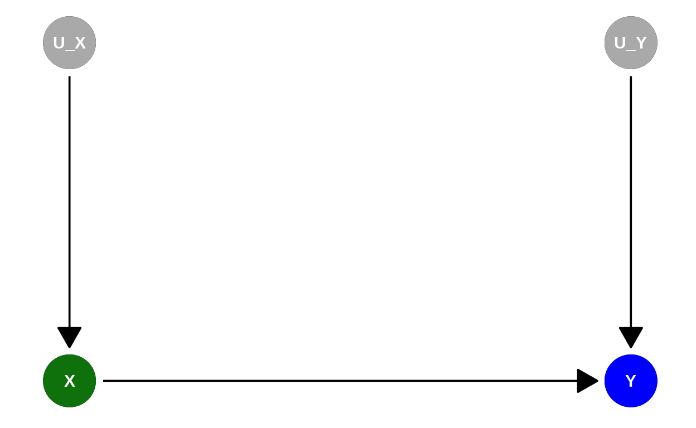

Learning objectives
In this module you will learn:
- how to determine counterfactuals.
The non-traveled path
When (retrospectively) assessing actions, we often ask ourselves: What would it have been like if I something had been different?
For example, assessing the human impact on climate change: what would global warming have been like if the industrialization had not occurred?
Or, for example, concerning the possibility of discrimination: Would I have gotten the loan if I were not a member of an ethnic minority?
These questions share an underlying structure: We have gone one way and know the result.
But we are now interested in what the result would have been if we had gone the other way.
We therefore want to determine the so-called counterfactual. Its value is counterfactual in the sense that it does not exist in reality because another of the potential outcomes was realized.
Note: See also Module 1.
Quelle: https://pixabay.com/de/photos/wald-pfad-weggabelung-weg-b%c3%a4ume-6607631/
We know what happened after we turned left. We now want to know what would have happened if we had turned right – with the background knowledge of what happened when we turned left.
This is the highest rung in Pearl’s causal ladder:
- Counterfactuals: – Imagination: What would have been, if?
We observed \(X=x'\) and its consequence \(Y=y'\). How probable is \(Y=y\), if I had instead assigned \(X=x\)? Expressed formally, we want to know the following probability: \(Pr(y_x|x',y')\)
Note: See Module 3 for an introduction to the causal ladder.
Study time and exam points
Many people are familiar with this consideration: You study for an exam, for example, a total of 10 hours. You achieve a good grade in the exam, let’s say 50 points.
“If I had studied more, maybe 20 hours, I would have achieved an even better, a very good grade.”
Let us assume the following highly simplified causal diagram:

Note: To calculate counterfactuals, you need to know the underlying causal model – which is why this step is at the top of the causal ladder. In our example here, in reality, there will of course be many other factors influencing exam success. So determining the causal effect of study time on exam points empirically will be very hard. We assume a known causal model that is highly simplified to show the underlying logic of counterfactuals.
The causal model of the graph \(\color{green}{X} \rightarrow \color{blue}{Y}\) consists of two assignments:
- \(\color{green}{X} = U_{\color{green}{X}}\)
- \(\color{blue}{Y} = f_{\color{blue}{Y}}(\color{green}{X},U_{\color{blue}{Y}})\)
Including the external factors \(U_{\color{green}{X}}\) and \(U_{\color{blue}{Y}}\), the causal diagram looks like this:

Let’s make an additional simplifying assumption:
\[f_{\color{blue}{Y}}(\color{green}{X},U_{\color{blue}{Y}}) = 2 \cdot \color{green}{X} + U_{\color{blue}{Y}}\]
This says that the mean of \(\color{blue}{Y}\) (exam points) increases by \(2\) units with each unit of \(\color{green}{X}\) (hours learned). In this case, the mean value of \(U_{\color{blue}{Y}}\) is zero.
Note: As you learned in the interview with Jakob Runge using the example of climate systems, setting up these equations in practice requires a lot of theoretical background knowledge.
Abduction
We assume the following:
- \(\color{green}{X} = U_{\color{green}{X}}\)
- \(\color{blue}{Y} = f_{\color{blue}{Y}}(\color{green}{X},U_{\color{blue}{Y}}) = 2 \cdot \color{green}{X} + U_{\color{blue}{Y}}\)
“You spend 10 hours studying for an exam. You achieve a good grade in the exam, let’s say 50 points.”
So now we know what we have observed for you: \(\color{green}{x'}=10\) and \(\color{blue}{y'}=50\).
Thus, we also know:
- \(U_{\color{green}{x'}}=10\)
- \(U_{\color{blue}{y'}}=\color{blue}{y'}-2\cdot \color{green}{x'}= 50 - 2 \cdot 10 = 30\)
In other words: We used the observed data \(\color{green}{x'}, \color{blue}{y'}\) to update our knowledge of \(U_{\color{green}{X}}\) and \(U_{\color{blue}{Y}}\).
Action
“If I had studied more, for example 20 hours…”.
Now we want to know what would be the effect of an action in terms of \(do(\color{green}{x}=20)\), that is, instead of
\[\color{green}{X} = U_{\color{green}{X}}\]
the updated, modified causal model is
\[do(\color{green}{x})=20.\]
But the rest remains unchanged – in particular, we continue to assume that for you, \(U_{\color{blue}{Y}}=30\).
Prediction
In the modified model
\[do(\color{green}{x})=20\]
and given the observation \(\color{green}{x'}=10, \color{blue}{y'}=50\)
- (\(U_{\color{green}{x'}}=10\))
- \(U_{\color{blue}{y'}}=\color{blue}{y'}-2\cdot \color{green}{x'}= 50 - 2 \cdot 10 = 30\)
we get the counterfactual
\[\color{blue}{y}=2\cdot\color{green}{x}+\underbrace{U_{\color{blue}{y}}}_{=U_{\color{blue}{y'}}}=2\cdot 20 + 30 = 70.\]
The reason it was so easy to determine the counterfactual is that we assumed a simple model involving only two variables, and a linear data generating process.
Summary
We need 3 steps to calculate a counterfactual.
First, Abduction: Using the observed values \(x', y'\) to determine the distribution of external unknown causes \(U\).
Second, Action: Modification of the model so that arrows in \(X\) are deleted and \(X=x\) holds.
Third Prediction: Using the modified model from the second step and the distribution of \(U\) from the first step to determine the expected value of the counterfactual for \(Y\).
Note
This course was supported by a grant from the German Federal Ministry of Education and Research, grant number 16DHBQP040.